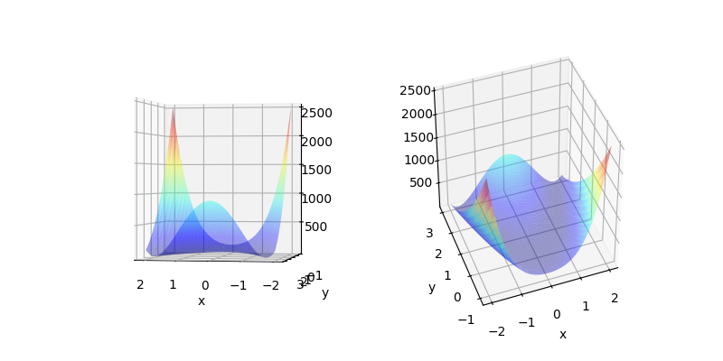
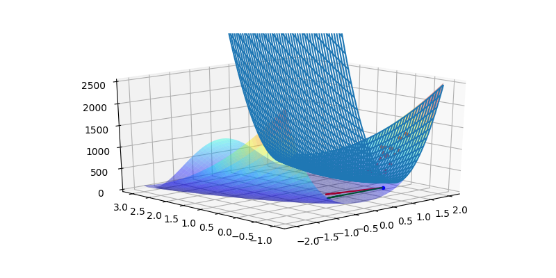

from mpl_toolkits.mplot3d import Axes3D
from matplotlib import cm
def Rosenbrock(x,y):
return (1 + x)**2 + 100*(y - x**2)**2
x = np.linspace(-2,2,250)
y = np.linspace(-1,3,250)
X, Y = np.meshgrid(x, y)
Z = Rosenbrock(X, Y)
fig = plt.figure(figsize = (8,4))
ax = fig.add_subplot(1, 2, 1, projection='3d')
ax.plot_surface(X,Y,Z,rstride = 5, cstride = 5, cmap = 'jet', alpha = .4, edgecolor = 'none' )
ax.view_init(0, 100)
ax.set_xlabel('x')
ax.set_ylabel('y')
ax = fig.add_subplot(1, 2, 2, projection='3d')
ax.plot_surface(X,Y,Z,rstride = 5, cstride = 5, cmap = 'jet', alpha = .4, edgecolor = 'none' )
ax.view_init(40, 250)
ax.set_xlabel('x')
ax.set_ylabel('y')
plt.savefig('func_70_dfo_01.png')

def Himmer(x,y):
return (x**2 + y - 11)**2 + ( x + y**2 - 7 )**2
x = np.linspace(-5,5,100)
y = np.linspace(-5,5,100)
X, Y = np.meshgrid(x, y)
Z = Himmer(X, Y)
fig = plt.figure(figsize = (8,4))
ax = fig.add_subplot(1, 2, 1, projection='3d')
ax.plot_surface(X,Y,Z,rstride = 5, cstride = 5, cmap = 'jet', alpha = .4, edgecolor = 'none' )
ax.view_init(0, 100)
ax.set_xlabel('x')
ax.set_ylabel('y')
ax = fig.add_subplot(1, 2, 2, projection='3d')
ax.plot_surface(X,Y,Z,rstride = 5, cstride = 5, cmap = 'jet', alpha = .4, edgecolor = 'none' )
ax.view_init(40, 250)
ax.set_xlabel('x')
ax.set_ylabel('y')
plt.savefig('func_70_dfo_02.png')
